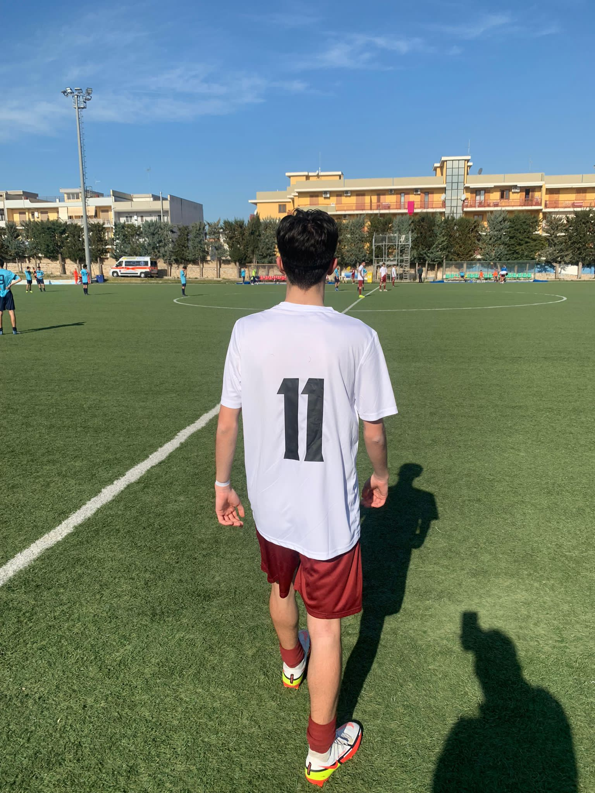

|

|
|
BiografiaSono Giuseppe Molfetta e sono uno studente dell'istituto Colamonico Chiarulli di Acquaviva dell fonti, abito a Grumo Appula in provincia di Bari, ho 16 anni e frequento il terzo superiore, mi piace giocare a calcio, e sono molto appassionato all'informatica e alla programmazione.
StudiMi sono iscritto a questa scuola perchè sono un grande appassionato di tutta l'informatica nel suo grande mondo e ho sempre voglia di scoprire di più su questa materia.
Conoscienze e CompetenzeHo acquisito competenze nella programmazione in linguaccio C++ e C anche se devo ancora incrementare le mie conoscienze a riguardo, e da un po' tempo mi sto affacciando al mondo dell'HTML che mi sta piacendo molto perchè permette di esprimere la propria creatività creando un sito web
Prospettive e ProgettiCome prospettive per il futuro ho quella di diventare un programmatore di videogiochi o qualcosa di inerente ma progettare pagine web non mi dispiacerebbe affatto, anche se come obbiettivo primario ho quello di diventare calciatore che è un sogno che mi porto sin da quando sono piccolo
|